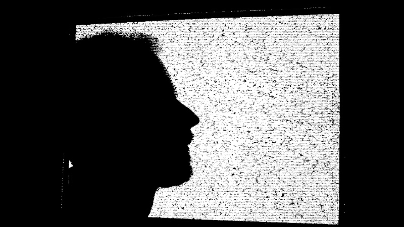

Artyom Grechko

The observer of this dimension; wanderer of the Metaworld.
I have an Autism Spectrum Disorder (ASD), which strongly affects perception and adaptation in such a large and unpredictable world, as well as the structure of AVIO.
The Wanderer. Success through smallness. Perseverance brings good fortune To the wanderer.
There are various notes about me and the processes around me.